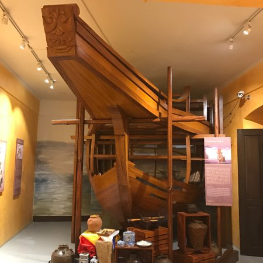
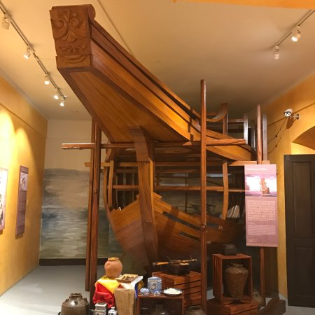

üìú History
Built: The earliest version was made of light materials in 1580.
Over time it was reconstructed/stabilized — stone version in 1767;
bricks and mortar in 1786; restored in 1852;
modified in 1843; and a balcony added around 1918.
Functions over time:
• Spanish colonial administration: Seat of the local government, office of the
gobernadorcillo;
Casa Tribunal; municipal presidency.
• Printing press during the First Philippine Republic: Produced revolutionary newspapers such
as
La Independencia, El Heraldo de la Revolucion, Kalayaan, Kaibigan ng Bayan, and the 1899
Constitution.
• American period: Became seat of the American military government.
• Other roles: Hospital (1923), annex of Bulacan High School (1941),
Japanese Chamber of Commerce during Japanese occupation.
ℹ️ General Information
Name: Casa Real Shrine / Museo ng Kasaysayang Pampulitika ng Pilipinas – Casa Real
Shrine.
Location: Paseo del Congreso, Plaza Rizal, Malolos City, Bulacan, Philippines.
What it is now: A museum/shrine housing exhibits on political history and heritage,
including revolutionary publications, memorabilia, and stories of Bulacan women and national figures.
⭐ Significance
Legally declared a National Shrine by President Diosdado Macapagal through
Executive Order No. 173 on October 4, 1965.
Cultural & Symbolic Importance:
• Houses relics of the Brave Women of Malolos, who petitioned for schooling in Spanish — an important
act in
the history of Filipino women’s rights and education.
• Offers insight into the political evolution of the Philippines, colonial administration,
press freedom, and struggle for independence.
• Its architecture (bahay na bato style) and artifacts reflect 19th-century Bulacan
society.
üèõÔ∏è Current Status
[Placeholder] The Casa Real Shrine continues to operate as a protected heritage site under the National Historical Commission. It regularly hosts educational tours, cultural events, and temporary exhibitions.
 
